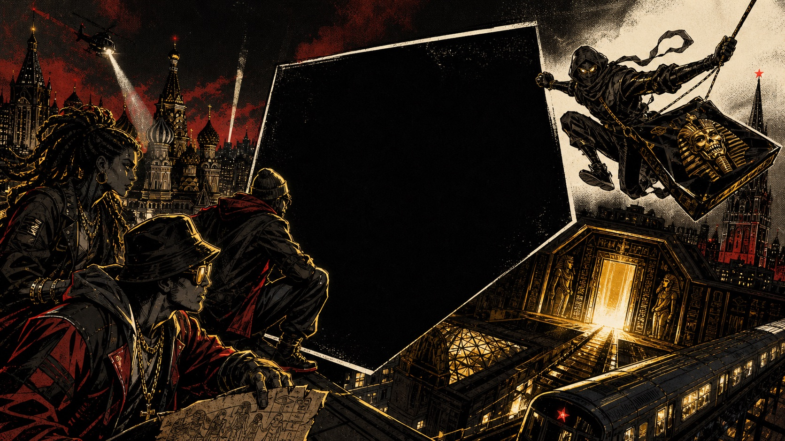

Пролог · Главный герой
Гриллзы Сергея Бежаева Sergey Bezhaev Grillz
Русский Человек-паук Сергей Бежаев спасает саркофаг-карту и зовёт звёзд на поиски гриллз Рамзеса III. За ними уже идёт «Кровь Сакуры» — клан, мечтающий управлять планетой.
«Поодиночке нас ослепят. Вместе мы найдём гриллзы первыми.»